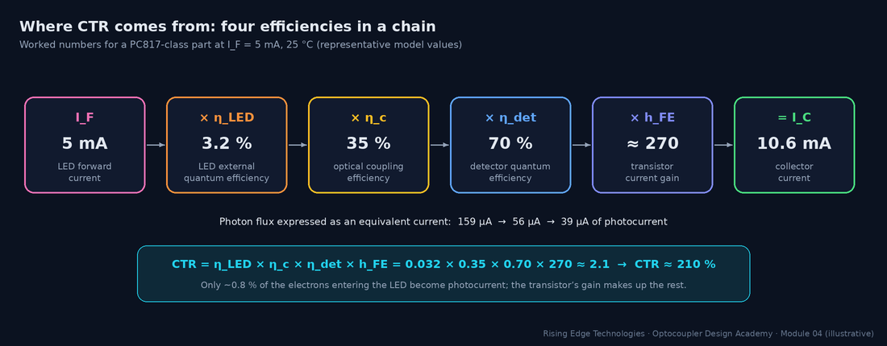
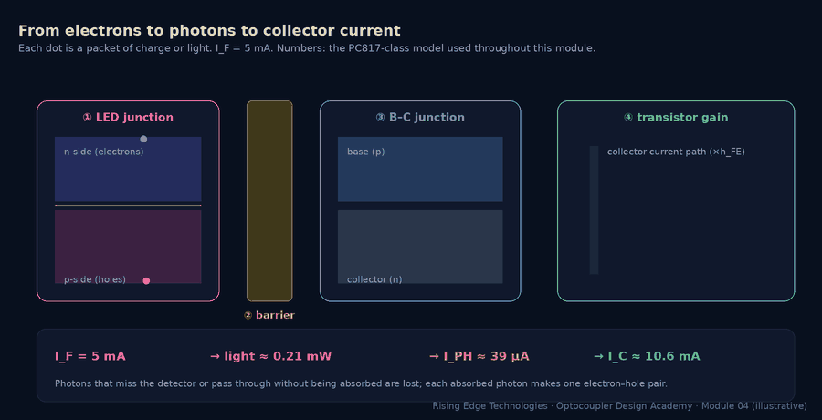
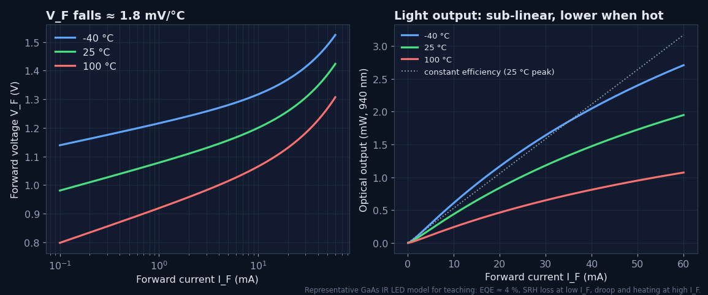
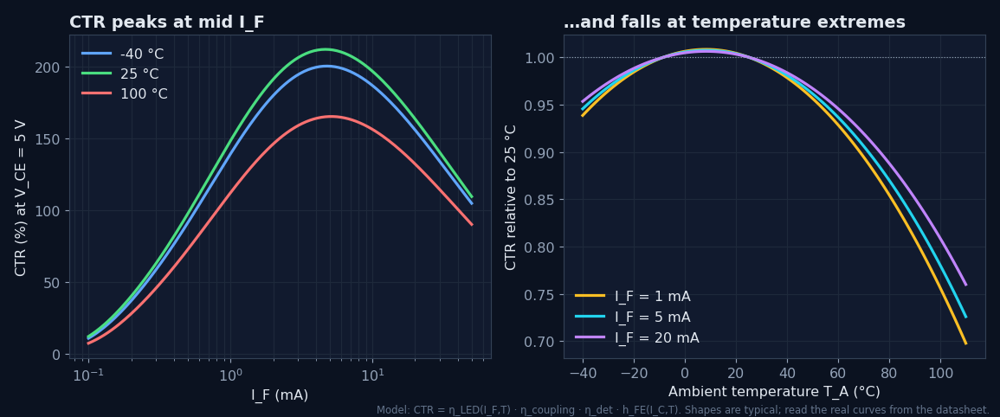
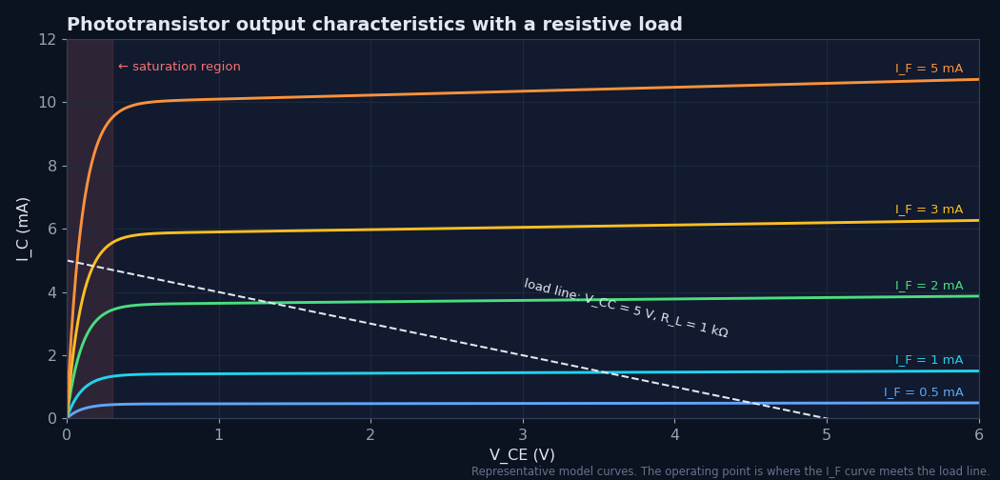
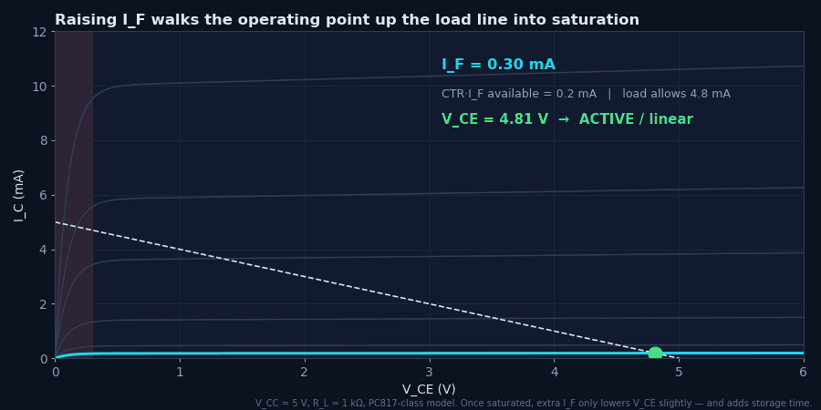
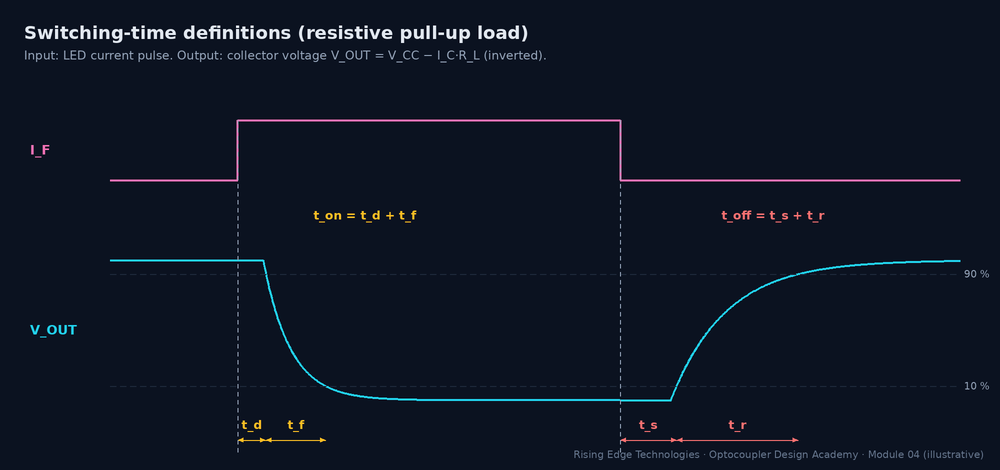
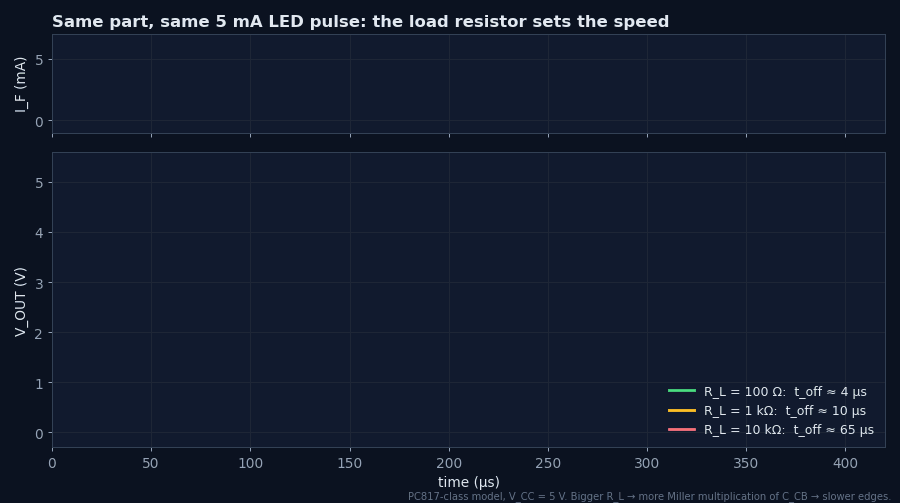
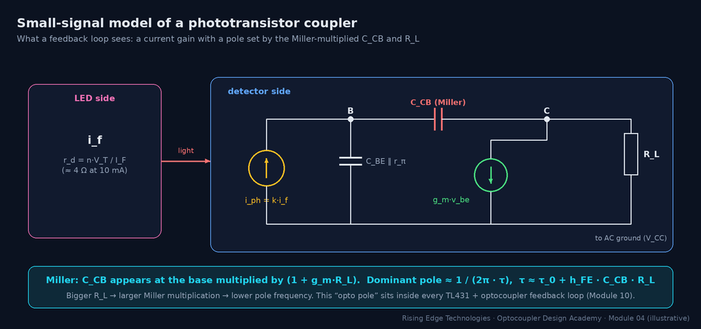

Working Principle
The device physics in working depth: radiative recombination and photon generation, optical coupling efficiency, photocurrent generation and transistor action, why CTR varies with current and temperature, and the dynamic behavior that sets switching speed limits.
Curves, animations and calculators on this page use a representative PC817-class phototransistor model built for teaching: LED external efficiency ≈ 3–4 %, coupling ≈ 35 %, detector quantum efficiency ≈ 70 %, peak hFE ≈ 300. The shapes and trends are typical. For design, always use the curves and min/max limits of the part you buy.
An optocoupler performs four conversions in series. Electrons become photons in the LED. Photons travel through the optical path, and some are lost. Photons become electrons again in the detector junction, as a photocurrent. The photocurrent is amplified by the detector transistor. Each step has an efficiency, and the product of the four is the number every designer cares about: the current transfer ratio (CTR).


Forward-biasing the LED injects electrons into the p-side and holes into the n-side. When an electron and a hole recombine, the energy they release goes one of two ways. In radiative recombination it leaves as a photon with an energy close to the band gap (≈ 1.3–1.45 eV, i.e. 850–940 nm). In non-radiative recombination it becomes heat in the crystal lattice, through defects (Shockley–Read–Hall recombination) or three-carrier Auger processes. The LED’s job is to make the first path win.
Internal, extraction and external efficiency
- ηIQE — internal quantum efficiency: fraction of recombinations that are radiative
- ηextr — extraction efficiency: fraction of generated photons that escape the die
- ηEQE — external quantum efficiency: photons out per electron in
- Popt — optical power in W when IF is in A (1240/λ is the photon energy in eV)
Internal efficiency can be high, but extraction is the killer. GaAs has a refractive index of about 3.5, so light hitting the die surface at more than a small critical angle is totally internally reflected and eventually reabsorbed. That is why simple optocoupler LEDs have external efficiencies of only a few percent.
Worked example — why so little light gets out
GaAs (n1 ≈ 3.5) into clear silicone (n2 ≈ 1.4):- Critical angle: sin θc = 1.4 / 3.5 = 0.40 → θc ≈ 23.6°.
- Fraction of isotropic emission inside that escape cone, through one face: (1 − cos θc) / 2 = (1 − 0.917) / 2 ≈ 4.2 %.
- Fresnel reflection even inside the cone at normal incidence: ((3.5 − 1.4)/(3.5 + 1.4))2 ≈ 18 % lost.
- Side faces and back-reflection recover some light, but a few percent overall is typical: this is the ηextr term.
Worked example — optical power at 5 mA
GaAs LED at 940 nm, ηEQE ≈ 3.2 % at IF = 5 mA. Photon energy 1240 / 940 = 1.32 eV. Popt = 0.032 × 1.32 V × 5 mA ≈ 0.21 mW. The electrical input is 5 mA × 1.15 V ≈ 5.8 mW, so wall-plug efficiency is ≈ 3.6 % and the rest is heat.The LED is still a diode: VF, IF and temperature
- n — ideality factor (≈ 1.5–2 for GaAs LEDs); VT = kT/q ≈ 25.7 mV at 25 °C
- IS — saturation current, which rises steeply with temperature, so VF falls by ≈ 1.5–2 mV/°C
- RS — series resistance (a few ohms); dominates at high current

Of the light that leaves the LED die, only a fraction reaches the detector’s active junction. The coupling efficiency ηc collects every geometric and optical loss between the two dies. It is fixed by the construction (Module 3), so you cannot change it as a designer. You can, however, understand why it varies between parts and over life.
| Loss mechanism | What happens | Typical influence |
|---|---|---|
| Geometry (solid angle) | The LED radiates into a wide cone; the detector subtends only part of it | Dominant term. Face-to-face > co-planar. |
| Fresnel reflections | Partial reflection at every refractive-index step (die/silicone, silicone/film, film/die) | A few % to ≈ 20 % per high-contrast interface |
| Absorption | Clear silicone, epoxy and polyimide absorb a little near-IR | Small when new; rises if materials yellow at high temperature |
| Detector fill factor | Light landing on metal contacts or outside the base area generates nothing useful | Set by detector layout |
| Alignment tolerance | Die placement and frame spacing vary from part to part | A main source of CTR spread between units |
Typical overall coupling efficiencies range from roughly 10 % to 50 % depending on construction. This module’s model uses 35 %.
A photon with more energy than silicon’s band gap (1.12 eV, i.e. wavelengths shorter than ≈ 1100 nm) can be absorbed and create an electron–hole pair. If that happens inside, or within a diffusion length of, the reverse-biased depletion region, the junction’s field sweeps the pair apart. The electron and hole flow as photocurrent. Two properties make this junction behave like a near-ideal current source:
Linear in light
Photocurrent is proportional to absorbed optical power over many decades, from nanoamps to milliamps.
Almost independent of voltage
Once reverse-biased, the junction collects the same current whatever the bias. It is a current source in parallel with the junction capacitance.
- ℛ — responsivity: amps of photocurrent per watt of light
- ηdet — detector quantum efficiency: pairs collected per photon arriving
- Pabs — optical power reaching the junction (W)
Worked example — following the 0.21 mW from Section 2
- Light reaching the detector: 0.21 mW × ηc 0.35 ≈ 73 µW.
- Responsivity at 940 nm with ηdet = 0.70: 0.70 × 940/1240 ≈ 0.53 A/W. An ideal (η = 1) detector would give 0.76 A/W.
- IPH = 0.53 A/W × 73 µW ≈ 39 µA, from 5 mA of LED current: a ratio of 0.78 %.
With no light the junction still leaks a small dark current (thermally generated pairs). It doubles roughly every 10 °C. In a phototransistor this leakage is multiplied by hFE and appears as ICEO (Module 3, Section 3).
In a phototransistor the light-sensitive junction is the base–collector junction. Photocurrent generated there flows into the base exactly as if an external base current had been applied, and the transistor multiplies it:
- Equivalent form: CTR = [Popt/IF in W/A] × ηc × ℛ[A/W] × hFE
- ICEO — dark current, negligible except at high temperature and very low IF
- Every factor depends on something: ηEQE(IF, T), hFE(IC, T, VCE). So CTR is a curve, not a constant.
Why CTR peaks at a middle current
Low IF: both halves weaken
LED: defect (SRH) recombination steals a larger share of carriers, so ηEQE drops. Transistor: at micro-amp base currents, surface and base recombination make hFE fall.
High IF: both halves droop
LED: Auger losses and self-heating reduce efficiency. Transistor: high-level injection makes hFE fall at large IC.
Middle: the sweet spot
For PC817-class parts CTR peaks around a few mA, which is exactly why datasheets specify CTR at IF = 5 mA.
Why CTR falls at both temperature extremes
Two effects fight. LED light output falls as temperature rises (more non-radiative recombination). Transistor hFE rises with temperature (typically a few tenths of a percent per °C). Near room temperature they roughly cancel. When cold, hFE loss wins; when hot, the LED loss wins. The net CTR curve is usually flattest around 0–40 °C and drops at both ends. The drop is steepest when hot.

CTR and VCE
Datasheets specify CTR at VCE = 5 V, where the transistor is well into its active region. Below roughly 0.5–1 V the collector–base junction starts to forward-bias, the transistor enters saturation, and the measured CTR collapses. In the model, CTR at VCE = 0.2 V is only ≈ 80 % of its 5 V value. Any “CTR at VCE(sat)” line in a datasheet is there precisely because switching designs live in this region (Section 6).
Worked example — using the datasheet’s CTR at a different IF and temperature
A PC817 rank B is guaranteed CTR ≥ 130 % at IF = 5 mA, VCE = 5 V, 25 °C. Your circuit runs at IF = 1 mA and up to 60 °C.- From the normalised CTR–IF curve (here, the model): CTR(1 mA)/CTR(5 mA) ≈ 0.70.
- From the CTR–temperature curve at 1 mA: CTR(60 °C)/CTR(25 °C) ≈ 0.93.
- Worst-case new-part CTR ≈ 130 % × 0.70 × 0.93 ≈ 85 %. Still apply the ageing factor from Module 9.
- Caveat: normalised curves are typical. Treat the ratio as an estimate, and keep generous margin or verify on real parts.
Put a resistor RL from VCC to the collector and the transistor can do one of two things. If CTR × IF is less than the current the resistor can pass, the transistor stays in its active (linear) region. Then IC = CTR × IF and the output voltage is an analog copy of the LED current. If CTR × IF is more than the resistor allows, the transistor saturates: VCE collapses to VCE(sat) (typically 0.1–0.3 V) and the output is a clean logic low.
- Overdrive factor k = CTR × IF × RL / (VCC − VCE(sat)). Switching designs want k ≥ 2 at end of life.
- More overdrive → lower VCE(sat), but longer storage time at turn-off (Section 7).


Worked example — will a 3.3 V logic output reach a valid low?
VCC = 3.3 V, RL = 4.7 kΩ, IF = 2 mA, unranked PC817 (CTRmin 50 %), temperature factor 0.8, end-of-life factor 0.5.- Current needed to saturate: (3.3 − 0.2) / 4.7 kΩ ≈ 0.66 mA.
- Worst-case available: 2 mA × 0.50 × 0.8 × 0.5 = 0.40 mA. k ≈ 0.61, so the output is not saturated.
- VOUT = 3.3 − 0.40 mA × 4.7 kΩ ≈ 1.42 V. That is above VIL for 3.3 V CMOS, so the input reads an undefined level.
- Fix: IF = 5 mA gives k ≈ 1.5. Better still, 5 mA with rank B (130 %) gives k ≈ 4, or raise RL to 10 kΩ if the slower edges are acceptable.
Switching times are defined on the output waveform between the 10 % and 90 % points. With a pull-up resistor, the output is inverted: turning the LED on makes the output fall.

| Interval | Physical cause | What makes it longer |
|---|---|---|
| td (delay) | LED turn-on plus charging the base node until the transistor starts to conduct | Low IF; large junction capacitance |
| tf (output fall) | Collector current rising while the collector node slews down | Large RL (Miller); low overdrive |
| ts (storage) | Excess charge stored in the saturated base must be removed before IC can fall | Deep saturation (high overdrive k); no base discharge path |
| tr (output rise) | Collector current decaying while CCB is charged back through RL | Large RL; high hFE; large CCB |
The Miller effect: why RL dominates speed
The large light-collecting base–collector junction has a capacitance CCB of the order of 10 pF. It connects the base (driven only by micro-amps of photocurrent) to the collector (swinging by volts across RL). Seen from the base, that capacitance is multiplied by the stage’s voltage gain, roughly gm·RL. A useful engineering approximation for the dominant time constant is:
- τ0 — intrinsic base time constant with RL → 0 (≈ 1–2 µs for PC817-class parts)
- hFE·CCB·RL — the Miller term. It grows linearly with RL.
Worked example — checking the model against a datasheet
PC817 datasheets quote tr ≈ 4 µs typ at RL = 100 Ω, IC = 2 mA. Model: τ = 1.5 µs + 270 × 10 pF × 100 Ω = 1.77 µs → tr ≈ 3.9 µs. With RL = 10 kΩ: τ ≈ 1.5 + 27 = 28.5 µs → tr ≈ 63 µs, sixteen times slower from the same part. Datasheet “response time vs RL” curves show the same trend.
Speed-up techniques
Base resistor RBE (6-pin parts)
Gives stored base charge a discharge path and shunts slow photocurrent tails. It speeds turn-off and cuts storage time. The cost: it steals ≈ VBE/RBE of photocurrent, so CTR drops, especially at low IF.
Keep the collector still
Drive the collector into a low-impedance node (a common-base transistor or a trans-impedance amplifier). With little voltage swing there is no Miller multiplication.
Avoid deep saturation
Size overdrive for end-of-life margin, not 10×. Every extra factor of overdrive adds storage time (≈ τs·ln k).
Or change the part
Above ≈ 20–50 kbit/s a photodiode-output part (6N136, 6N137) or a digital isolator is usually the right answer, not a heavily tuned phototransistor.
In an SMPS feedback loop the optocoupler never switches. It sits in its active region and passes small changes of LED current to the primary side. For that job you need the small-signal (incremental) CTR and the frequency response, not the DC CTR.

- CTRss is the slope of the IC–IF curve at the bias point. It differs from the DC CTR because CTR itself varies with IF.
- fopto — the “opto pole”. It adds phase lag to the loop and must be included in compensation.
Worked example — opto pole in a TL431 + PC817 loop
Primary-side pull-up RL = 4.7 kΩ, bias IC ≈ 1 mA (hFE ≈ 290 in the model), CCB ≈ 10 pF, τ0 ≈ 1.5 µs.- τ = 1.5 µs + 290 × 10 pF × 4.7 kΩ ≈ 15 µs.
- fopto = 1 / (2π × 15 µs) ≈ 10.6 kHz.
- A loop crossing over at 2–3 kHz sees roughly 11–16° of extra phase lag from the optocoupler alone. Doubling RL to raise gain moves the pole down to ≈ 5.5 kHz and doubles that lag.
- Real opto poles vary widely with part, bias current and temperature (a few kHz to tens of kHz are common). Measure it with a network analyzer before closing a demanding loop. Module 10 shows how.
Four conversions
CTR = ηEQE × ηc × ηdet × hFE. Under 1 % of LED electrons become photocurrent; hFE does the rest.
Extraction limits the LED
Total internal reflection in high-index GaAs keeps external efficiency at a few percent.
The junction is a current source
Photocurrent is linear in light and almost independent of voltage: ℛ = η·λ/1240 A/W.
CTR is a curve
It peaks at a few mA, falls at both current extremes and at both temperature extremes, and collapses at low VCE.
Saturation needs overdrive
Switching designs need CTRworst·IF ≥ 2× the load current at end of life.
RL sets speed
τ ≈ τ0 + hFE·CCB·RL: the Miller term makes large pull-ups slow.
Turn-off is the slow edge
Storage time grows with overdrive; RBE helps but costs CTR.
Loops see a pole
The opto pole (typically a few kHz to tens of kHz) and CTR spread must be part of loop compensation.
Working-principle design checklist
Tick items as you review a design. Your ticks are saved in this browser only.
Four parts: multiple choice, true/false, a matching exercise and three engineering scenarios. Score 80 % on the multiple choice to pass the module.